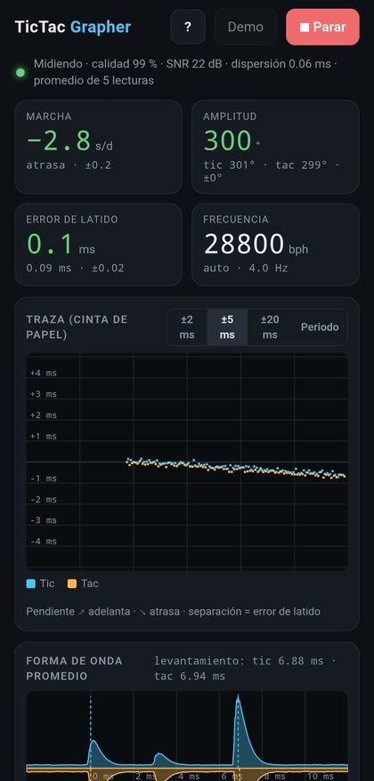
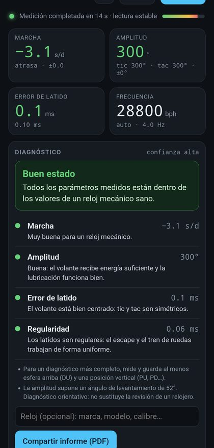
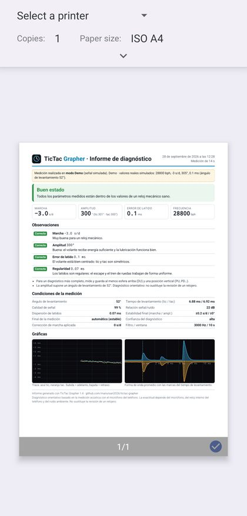
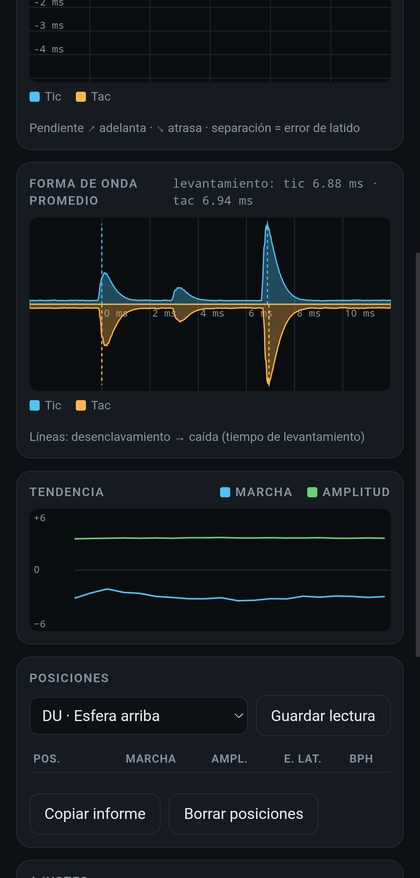
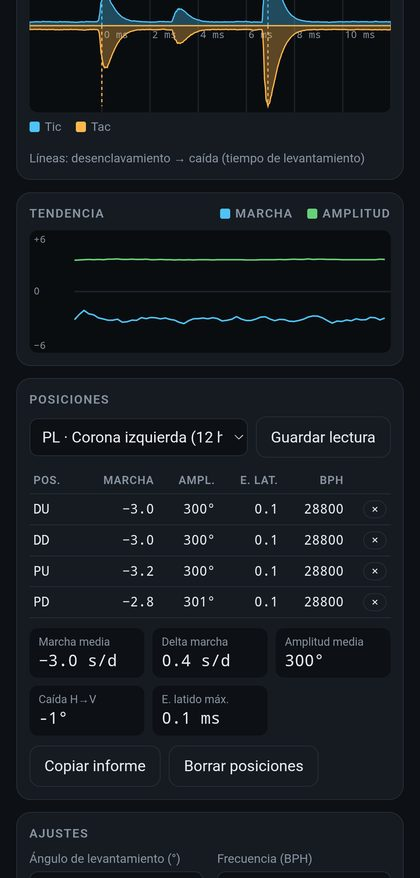
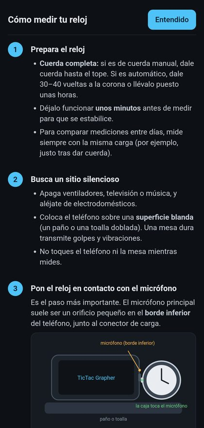

¿Qué es TicTac Grapher?
Un vibrógrafo en el bolsillo, sin cuentas, sin anuncios y sin conexión a Internet.
Los relojeros usan un timegrapher (o vibrógrafo) para saber cómo está un reloj mecánico sin abrirlo: escucha el tictac del escape y, a partir del momento exacto de cada sonido, calcula si el reloj adelanta o atrasa, con cuánta energía oscila el volante y si está bien equilibrado.
TicTac Grapher hace lo mismo con el micrófono del teléfono. Apoyas el reloj sobre el micrófono, pulsas Medir y, en unos 15–30 segundos, la medición se detiene sola y muestra los resultados con un diagnóstico del estado del mecanismo: si está en buen estado, si necesita una regulación, si podría estar magnetizado o si conviene llevarlo a revisión.
Segundos que adelanta o atrasa al día.
Cuánto gira el volante: energía, lubricación y desgaste.
Asimetría entre el tic y el tac.
Latidos por hora, detectados automáticamente (12000–43200).
Así se ve
Capturas de la aplicación en modo Demo (reloj simulado).






Funciones principales
Todo lo que hace la aplicación, resumido.
🎙️Medición con el micrófono
Analiza el sonido del escape con un filtrado específico para los «clics» metálicos del reloj. Ignora voces, zumbidos y el ruido de colocar el reloj.
⏹️Parada automática
La medición termina sola cuando la lectura es estable y el teléfono vibra. Si no llega a estabilizarse, avisa de que el resultado es poco fiable.
🩺Diagnóstico del mecanismo
Veredicto global (buen estado, necesita ajuste, amplitud baja, magnetizado, necesita revisión…) con la explicación de cada parámetro y qué hacer.
📄Informe PDF para compartir
Informe de una página con el diagnóstico, los valores, las posiciones y las gráficas. Se comparte con un toque por WhatsApp, correo o Drive, o se imprime.
📈Traza tipo cinta de papel
Un punto por latido, como en los timegraphers clásicos: la pendiente muestra si adelanta o atrasa y la separación entre tic y tac, el error de latido.
〰️Forma de onda del escape
Muestra los tres sonidos de cada latido (desenclavamiento, impulso y caída) y el tiempo de levantamiento con el que se calcula la amplitud.
🧭Seis posiciones
Guarda la medición en esfera arriba, abajo y las cuatro verticales. Calcula la marcha media, la diferencia entre posiciones y la caída de amplitud.
📘Guía integrada
Explica paso a paso cómo colocar el reloj, qué ángulo de levantamiento usar y cómo identificar el calibre si no lo conoces.
🎚️Ajustes finos
Frecuencia automática o manual, filtro, ventana de promedio, corrección de marcha del teléfono y congelado de la lectura.
🎧Grabación de diagnóstico
Graba 20 segundos del sonido del reloj en WAV para analizarlo con detalle, y lo guarda en Descargas/TicTac.
🧪Modo Demo
Simula un reloj con valores conocidos para probar la app sin necesidad de tener uno a mano.
🔒Privada y sin conexión
El sonido se analiza solo en el teléfono. La app no necesita Internet, no tiene cuentas ni anuncios, y solo pide permiso para el micrófono.
Cómo se mide
Cuatro pasos. El manual y la guía de la app lo explican con detalle.
- Da cuerda completa al reloj y déjalo funcionar unos minutos.
- Coloca el teléfono sobre un paño, en un sitio silencioso, y apoya la caja metálica del reloj contra el orificio del micrófono (normalmente en el borde inferior).
- Pulsa Medir y no toques nada. La medición se detiene sola cuando la lectura es estable.
- Lee el diagnóstico y, si quieres, comparte el informe en PDF por WhatsApp o correo. Repite en otras posiciones para un diagnóstico completo.
Cómo instalar la APK
La aplicación no está en Google Play, por lo que se instala directamente desde el fichero.
- Desde el navegador del móvil Android, pulsa Descargar APK y guarda el fichero
TicTacGrapher.apk. - Abre el fichero descargado (desde la notificación de descarga o con la app Archivos).
- Si Android lo pide, permite instalar aplicaciones de esta fuente (navegador o gestor de archivos). Es una pregunta habitual para cualquier app fuera de Google Play.
- Pulsa Instalar. La primera vez que pulses Medir, concede el permiso de micrófono. Las nuevas versiones se instalan encima sin perder los ajustes.
Descargas
Ambos ficheros se descargan desde esta misma página.
📘Manual de usuario
Guía completa con capturas, diagnóstico, solución de problemas y un anexo sobre cómo funciona el escape · PDF · 2.0 MB
Descargar manual (PDF)